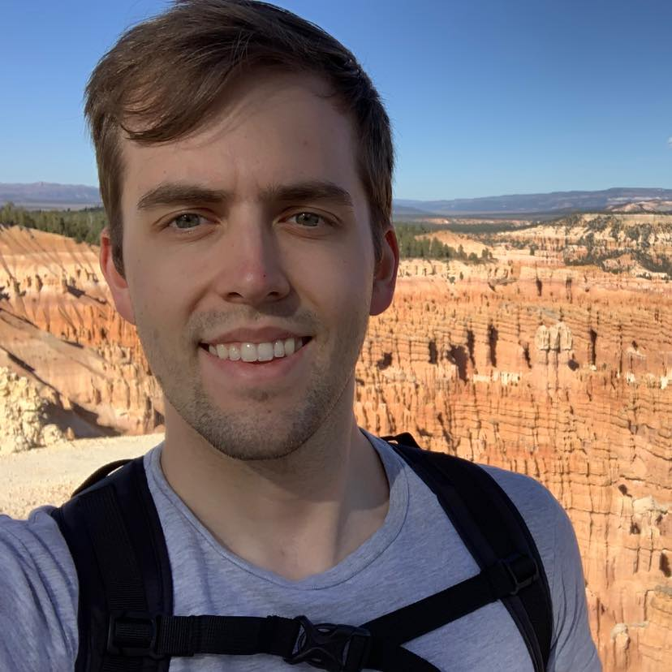

Hi there! My name is Jacob and I'd like to tell you a little bit about myself. Like you can see in the header I'm a Software Developer and passionate about learning. I like to learn things and gain new experiences. I also like to make things, and so software development has been one of my most favorite things I've done.
Here in this about me page I'd like to share a little bit of who I am and the experiences that have made me who I am, which I hope will show what I can bring to the table. I am a person who values finding joy and growth along the journey, and while results are important I also try to understand the human element of my work and do my best to make people happy while at the same time providing them what they're seeking. I've definitely had some interesting experiences in my life which have helped me to become the capable and proactive person that I strive to be today.
While I'm sure I could start from the very beginning, I think probably my most formative years were in high school and directly afterwards. I grew up in Las Vegas, NV and went to Sierra Vista High School for most of my secondary education. I learned how to do well in school and appreciated the friendships I was able to make while I was there. However, during my senior year I moved to Colorado and ended up in a mixed-family setting. This was definitely hard since I no longer had a strong support system, but it taught me moving forward to value the time that I had with the people I love. With the Colorado education system though I was able to have additional experiences which weren't available to me while I was in Nevada schools, and I made friendships which helped me to move forward through the hard times.
Prior to graduation, I started in the workforce getting a job at Sonic Drive-In. It was interesting to say the least, and while I didn't learn many technical skills I was able to learn the value of teamwork and soft skills which are valued by many companies in the professional world. I learned to have patience with people who were difficult to work with, perseverance to get a job done well even when there are constant demands for a quick resolution, and I learned the value of teamwork. A common complaint with the US Education System is that it doesn't adequately prepare people for collaboration and teamwork, but I can say I learned the fundamentals of how to work as a team in my first job, which was only built upon as I gained more professional experience.
After graduation, however, I received word that my grandmother had died. This was very hard on me as she was one of the greatest examples of kindness and hard work I had in my life, and due to living far away I wasn't able to have the formative experiences that many people have with their grandparents, which left a hole in our family which nothing could replace. We were sad that she had passed on, and we were worried that my grandfather, who was 95 at the time, would be unable to take care of himself. However, I decided to volunteer to move to Utah and take care of him as it would help him to have some sense of stability in this time of loss, and it would also provide me an opportunity to pursue higher education. I was able to learn life skills that many of my peers had not yet had the opportunity to learn, and I was able to improve upon my learning skills attending what is now Ensign College in Salt Lake City, UT. I was also able to get a job at RC Willey Home Furnishings and learn how to network, inspire, and lead a team, even without having an official job title of supervisor or team lead. After a year or so of taking care of my grandfather and studying, I felt it was my duty to serve a mission for the Church of Jesus Christ of Latter-Day Saints, and began preparations to accept a call to give service.
I was assigned by the Church to serve in Lima, Peru. While I was definitely nervous to serve, I was excited for a new opportunity and felt in my heart that while I didn't know why, I was assigned to the right place. After finalizing arrangements for my grandfather to live with my mother, in December 2016 I traveled to Peru with several missionaries assigned to labor in South America. As a missionary one is assigned to labor with an assigned companion every day for two years and teach people the principles of the Gospel as taught by the Church. This was my primary function as a missionary, but I always gave my best effort to working within the constraints given me and work as much as I could to meet mission goals and quotas.
I was also given the opportunity to serve as a mission leader. First I was given the opportunity to serve as the Mission President's personal secretary. In this role, I was charged to ensure that missionaries had adequate resources and tools to ensure that they could focus on their teaching efforts. I was also assigned to make sure that missionary visas and other documentation was up-to-date. Up to that point, all process were manual and tedious, but I was able to automate many of the processes and make it easier for later secretaries to perform their work. I was also later given the role of being a District Leader, and I was required to coordinate the teaching in a certain area of our mission. I was able to inspire and organize our district so that we all ended up meeting and exceeding our goals.
During this as a missionary, I was able to learn about the cultures of the people I worked with as well as those who I taught to, and I gained the ability to incorporate others' perspectives into mine to be able to see the bigger picture, for which I am very grateful. I learned this during a hard time on my mission, but this experience has made me into the person I am today. At the time, mission leaders were expecting results but acting without forethought. They were suggesting methods of finding and teaching which forgot the human element (the primary focus of missionary work) which left us without results and burned-out. Mission leaders required at the same time exact obedience and promised results as we did exactly as they told us. When this didn't work for me, and I didn't know what else to do I prayerfully considered what to do. Then it occured to me that they were requiring these actions because they didn't consider the needs of the people that we taught nor the needs of us as teachers. It was then when I felt that I needed to carefully listen to the perspectives of those I taught as well as those of my companion, and through that I would be able to understand the needs of those I worked with and be more equipped to help them. That way I would be able to teach them according to their needs and help them come closer to the Lord through the Church. And this worked excellently; as I sought to understand the needs of those around me and take into account their perspectives I was able to resolve their doubts and provide the solution to their issues. Above all it helped me to build lasting friendships which I've kept unto this day.
I returned to the US after two years of service. I took up my studies again and began to establish my career in the working world. I decided that Accounting, which I studied prior to my mission service, wasn't for me and decided to look for another career. But this was about the time when the Covid-19 pandemic began. For many people this was terrible and I'm grateful that this didn't affect me as much as many others. But for this and financial reasons I had to leave my studies again. But once the pandemic began to calm down, I wanted to get back into my studies as soon as possible, but I wasn't able to find a degree I wanted to pursue through Ensign College. That's when I discovered Western Governors Univeristy.
WGU was a Godsend for me. While it took as much work as it ever did through Ensign College, WGU was flexible and allowed me to work full-time while studying full-time as well. I was able to learn new skills which I was actually able to implement in my job at the time. One of which was a proposal and plan to reconfigure our loan application software to be able to protect against unnecessary credit pulls, keeping people's credit in good standing and preventing any complaints against the credit union I was working for. I was also able to work on several different software projects at WGU using Java, Python, and C++ (among other languages) to build several different software applications. Eventually I was able to graduate with a Bachelors of Computer Science which I am very proud of and grateful for to this day. More than anything though, WGU provided me with the skills of continuous learning. As WGU is a completely online univeristy, one is not assigned an instructor who gives lectures; rather you are given resources to learn on your own and then a final assessment to ensure you have captured and retained the principles taught. This learning style, while hard, made it possible for me to learn many skills on my own and has prepared me to be proactive in learning the different frameworks, libraries, and languages which are implemented in the modern world. It also inspired me to appreciate the march of technological progress and take an interest in improving our world for the better through new technology.
I'm the kind of person who likes to be a jack of all trades, and I like to experience and learn new things. As a kid I liked to play video games and imagine technological possiblities which could happen in our future. As I grew up, I took an interest in spiritual things such as religious worship and learning the origins of scriptural text and religious ritual and philosophy. As I served as a missionary in Peru, I also gained an appreciation for international foods and learning about other peoples' cultures and how I can use those to improve my own worldview. I also find it exciting to look for the underlying meaning and metaphor found in stories. One such example is a video game I played as a kid called "Chibi Robo". What initially seems like a simple game about being a cleaning robot underneath the surface is a tale of the deterioration, reconstruction, and reconciliation of familial relationships and the overcoming of unique personal challenges, and I love delving into and exploring stories like this which have so much heart and thought put into them.
It has been said that the two Great Commandments of Christianity are to love the Lord God with all our hearts, might, mind, and strength and to love our neighbors as ourselves. While this might be more scriptural, I see this as a pragmatic value that I try to implement into my life. I feel that it is vital to care for those around us and seek to do good to our neighbors. Throughout history humankind has come into conflict with one another many times, but when we are willing to work together and form beneficial relationships between each other we can do great things. The fundamentap principle of society is working together for the betterment of us all, and I feel that me contributing in any way that I can is vital and a principle I strive to live my life by. Apart from the altruistic nature of this principle, I also pragmatically apply it to my collaborations and interactions with others, and try to listen to their points of view and incorporate their ideas to make the best outcome for all involved.
While I believe in selfless actions done with no interest for oneself, I also do understand and feel it is important to take care of oneself as well. Whether we are more than just creatures in a strange world or not, we need to make sure we our needs are taken care of, and for me that means taking time for myself to relax and unwind after a long day. That way I can clear my mind and be ready to tackle the challenges and opportunities of a new day.
Along with taking care of oneself, just as important is maintaining some sense of spirituality and mindfulness of one's place in the world. For me, spirituality is the road to self-actualization, and while traditionally spirituality is associated with a religion, for me spirituality is simply connecting oneself with a higher power or something larger than themselves. This in part has taken the form for me of believing in and worshiping God according to the dictates of my conscience, but it also takes the form of self-improvment and goal-setting. This inspires me to keep working to learn and improve and better myself. It also drives me to always give my best effort in everything that I do. And while I pray and feel this is vital for my relationship with Deity, I find peace in meditation and analyzing what I've done well, where I want to be, and how I can get there all while feeling close to the Divine as I do so.
I value honest and efficient hard work as well. Although I wouldn't consider myself a futurist, I would say I believe in progress and improving upon what we already have. With that being said, there are traditional values which I believe are vital for said progress and diligence is a key value which I try to emulate in my life. At work or in my studies, when I am given a project I do my best to plan out what my course of action is and then diligently do as much as I can until the job is done or I can't do any more. If I get to the point where I can't do any more, I search resources to find a solution and if I can't I seek for help from colleagues, at which point the problem is usually solved.
Copyright © Jacob Hewitson 2022